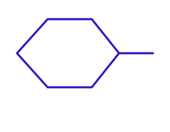
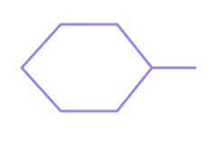
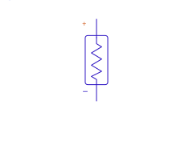
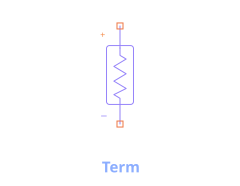
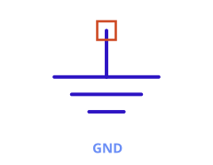
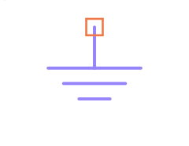

Pins, Ports & Terms
Three concepts that sound interchangeable but aren't. Getting them right is the difference between a circuit that simulates what you intended and one that doesn't.
The one-paragraph version
A Port is the abstract idea of an external connection. circuitRF realizes a port two different ways depending on context: inside a reusable cell, a port is a Pin (a connectivity-only interface terminal); on an S-parameter test bench, a port is a Term (a numbered, reference-impedance termination the simulator excites and measures). So: Pin = a cell's connection point; Term = an S-parameter measurement port; Port = the general concept either one realizes.
| Pin | Term | |
|---|---|---|
| Role | Cell interface terminal | S-parameter port termination |
| Electrical model | None (connectivity only) | Reference impedance + excitation/measurement |
| Lives on | A cell's symbol | A test-bench schematic |
| Key parameter | Num (+ optional Name, polarity) | Num + Z (reference impedance) |
| Use it to… | Expose a reusable cell's connections to its parent | Define where S-parameters are measured, and the port impedance |
Pin — the cell interface terminal


A Pin marks a point where a cell connects to the world outside it. When you build a
reusable cell (say, an amplifier), you place Pins where its gate-in, drain-out, and bias connections should
be; those Pins become the cell's symbol pins, and the parent schematic wires to them. A Pin
carries no electrical model — it is pure connectivity. Its Num orders the cell's ports;
Name labels them; an optional Plus/Minus polarity pairs two Pins into
one differential port.
A Pin does not source, load, or terminate anything — it just says "this net is exposed." If you want a 50 Ω measurement port, a Pin alone won't give you one; that's a Term's job.
Term — the S-parameter port


A Term is an active S-parameter port: it presents a reference impedance (Z, default 50 Ω)
and is the point at which an S-parameter analysis injects a wave and measures the scattered result. Place
two Terms on a network and run S-parameters to get the 2-port S-matrix; their Num values
(auto-assigned 1, 2, …) become the port indices you read as S(2,1), etc. The
P1Tone source can also act as a numbered port for power-driven work.
A note on Ground


Ground (net 0) is the global reference — not a port at all. A Term's impedance is referenced
to it; a Pin may connect to it like any net. Every port voltage is ultimately measured against ground unless
a component declares its own floating reference (see the SnP floating-reference option in
Dynamic symbols).
Choosing the right one
- Building a reusable cell and need to expose its connections? → Pin.
- Setting up an S-parameter measurement on a test bench? → Term (one per port).
- Driving a power amplifier and also want it to be a numbered port? → P1Tone with a
Num. - Just need a reference node? → Ground.
See also: Components › Pin / Term · Dynamic symbols · New User's Guide for a gentler take.